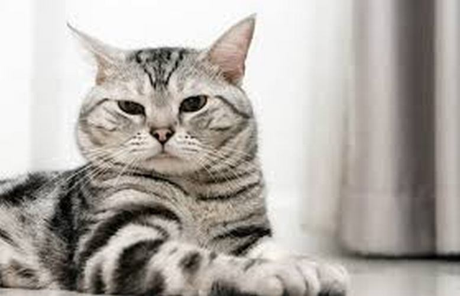

Nguồn gốc
Mèo Mỹ lông ngắn một tay thợ săn thượng hạng, là một trong những giống mèo được phát triển rộng rãi và phổ biến nhất ở Mỹ hiện nay.
Mô tả
Tuy rất giỏi săn bắt chuột, nhưng mèo Mỹ lông ngắn lại là giống mèo yêu thích sự tĩnh lặng, hoàn toàn có thể tự chơi một mình.
Chi tiết
Mèo Mỹ lông ngắn có phần lông ngắn, khá dày, với đủ các loại màu sắc đa dạng như đơn sắc, khoang, đốm hoa, vân rùa, tam thể, đa sắc v.v… Màu lông phổ biến nhất là bạc với khoang đen.